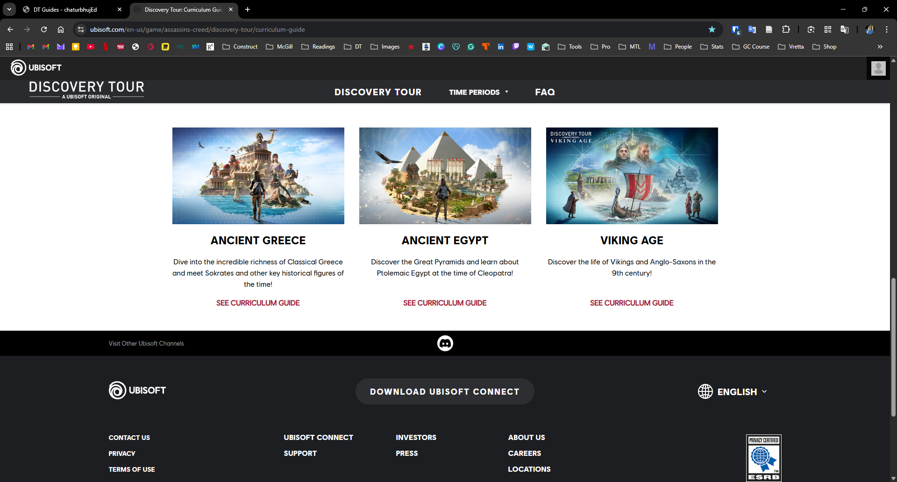
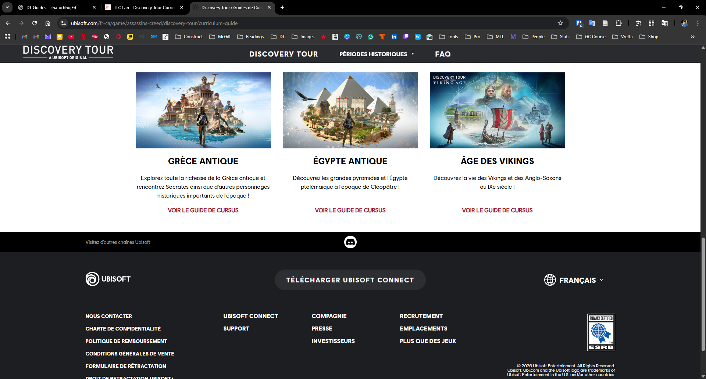
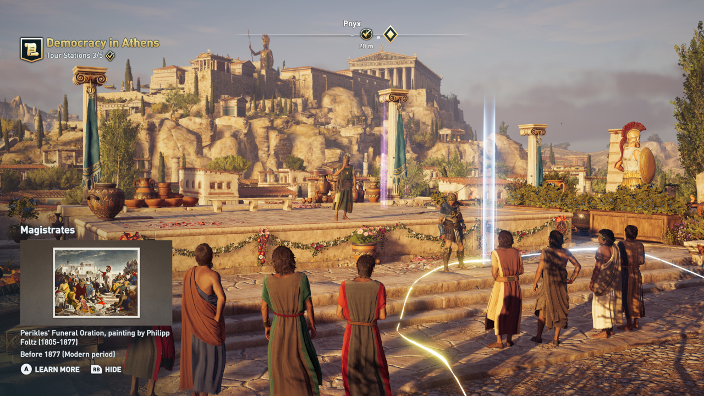
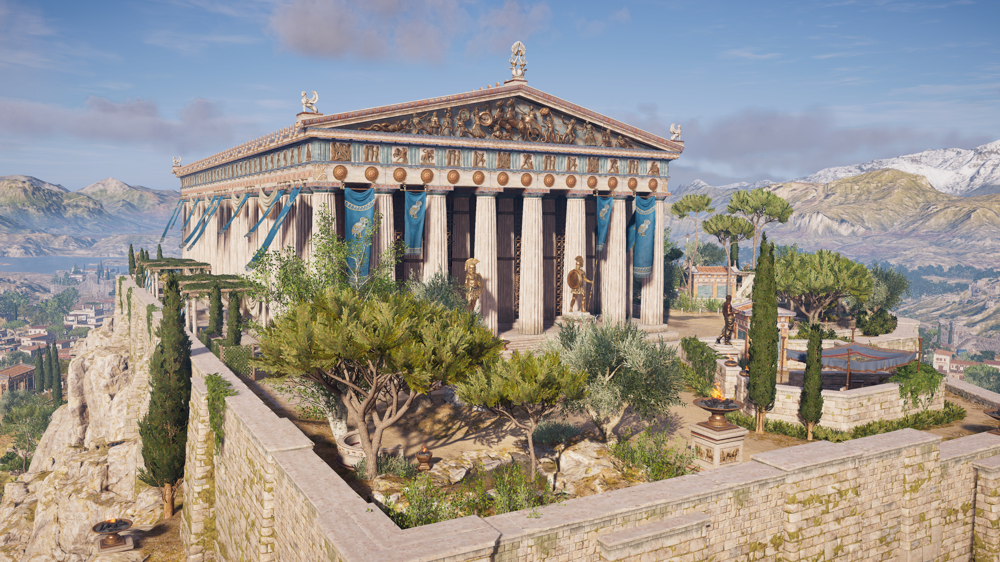
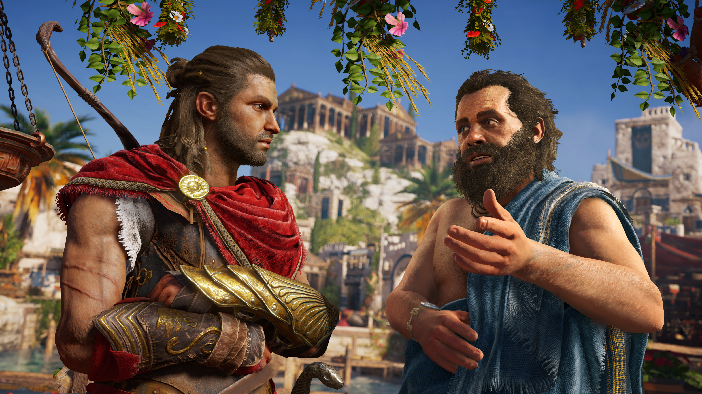
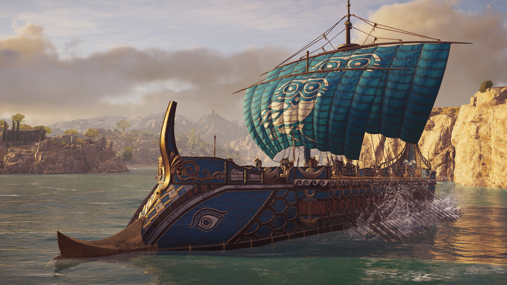

Discovery Tour Curriculum Guides

World's first, interactive, gaming curriculum guides for teachers.
Description
Created in collaboration with Ubisoft Montreal, these are unique, first of their kind, interactive curriculum guides for teachers, created for three Assassin's Creed Discovery Tour Games.
Discovery Tour games let players and students freely roam the immersive worlds of Ancient Egypt, Ancient Greece, and the Viking Age to learn more about their history and daily life. These curriculum guide are meant for teachers to develop customized lesson plans and printable classroom materials. The theories applied to develop the guides were the Technological, Pedagogical, Content Knowledge framework (TPACK, Mishra & Koehler, 2006), the Technology Acceptance Model (TAM, Davis, 1989), and the Learning Mechanics-Game Mechanics framework (Arnab et al., 2015).
The guides are delivered through an interactive website with four sections:
1) Curriculum Map - learning goals are selected from existing standards and then gameplay and classroom activities are suggested;
2) Gameplay Map - all possible "in-game" play behaviors are described and links are made with learning outcomes;
3) Lesson Plans - tailored to different subjects, ages, and instruction modalities;
4) Adoption Tips - addressing common technical and practical barriers.
Links and Resources

All 3 DT Guides in English.
Visit the website.

All 3 DT Guides in French.
Visit the website.

What is Discovery Tour?
Watch on YouTube.

Curriculum guides launch video.
Watch on YouTube.

Description of the guides.
Watch on YouTube.

How to use the guides: walkthrough.
Watch on YouTube.
News and Updates

Report: Discovery Tour Curriculum Guides project covered in Academia-Industry Case Studies 2025.
Published by WikiT on May 27, 2025.

Feature: Discovery Tour Curriculum Guides project covered by Dr. Matthew Farber.
Published in Edutopia on Dec 12, 2022.

Feature: Discovery Tour Curriculum Guides project covered by Study International.
Published by Study International on Aug 30, 2022.

News: TLC Lab Discovery Tour collaboration with Ubisoft.
Covered by Mobile Syrup on June 15, 2022.

Feature: Discovery Tour Curriculum Guides project covered by McGill.
Published by McGill Faculty of Education on Feb 7, 2022.
Funding and Support


Team Members
- Robin Sharma — Curriculum Developer and Project Lead, TLC Lab, McGill University
- Adam Dubé — Principal Investigator, TLC Lab, McGill University
- Chu Xu — Curriculum Developer and Researcher, TLC Lab, McGill University
- Chengyi Tan — Researcher, TLC Lab, McGill University
- Daniel Gomez — Researcher, TLC Lab, McGill University
- Maxime Durand — Project Supervisor and Lead Historian, Ubisoft
- Antoine Guignard — Producer, Ubiosft
Publications and Presentations
- Sharma, R., Tan, C., Gomez, D., Xu, C., & Dubé, A. K. (2025). Guiding teachers’ game-based learning: How user experience of a digital curriculum guide impacts teachers’ self-efficacy and acceptance of educational games. Teaching and Teacher Education, 155, 104915. https://doi.org/10.1016/j.tate.2024.104915
- Sharma, R., Tan, C., Gomez, D., Xu, C. & Dubé, A. (2025). Teachers’ game-based knowledge and their user experience of curriculum guides for digital games. American Educational Research Association Annual Meeting, Denver, USA. https://doi.org/10.3102/2184298 https://doi.org/10.3102/IP.25.2184298
- Sharma, R., Tan, C., Gomez, D., Xu, C., & Dubé, A. (2024). How teachers’ user experience of digital curriculum resources impacts acceptance of game-based learning and teaching. American Educational Research Association Annual Meeting, Philadelphia, USA. https://doi.org/10.3102/2101522 https://doi.org/10.3102/IP.24.2101522
- Xu, C., Sharma, R., & Dubé, A. K. (2023). Discovery Tour Curriculum Guides to Improve Teachers’ Adoption of Serious Gaming. In E. Champion & J. Francisco Hiriart Vera (Eds.), Assassin’s Creed in the Classroom History’s Playground or a Stab in the Dark? (pp. 35–64). De Gruyter Oldenbourg. https://doi.org/10.1515/9783111253275-003
- Xu, C., & Sharma, R. (2022). Discovery Tour Game Curriculum Guides for Teachers: Assassin’s Creed. Antiquity in Media Studies Conference. https://antiquityinmediastudies.wordpress.com/2022program/
- Xu, C., Sharma, R., & Dubé, A. (2021). Development of curriculum guides for the Assassin’s Creed Discovery Tour games to enhance teachers’ adoption of games for learning [Abstract]. Technology, Mind & Society Conference, United States. https://doi.org/10.1037/tms0000046